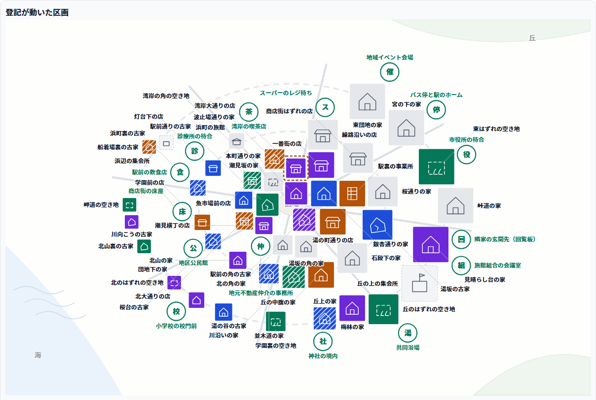
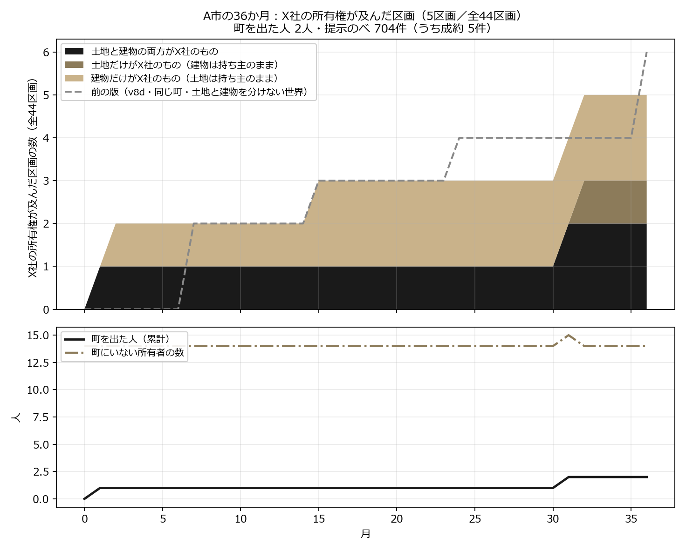
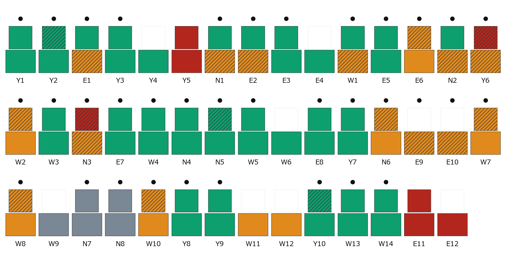
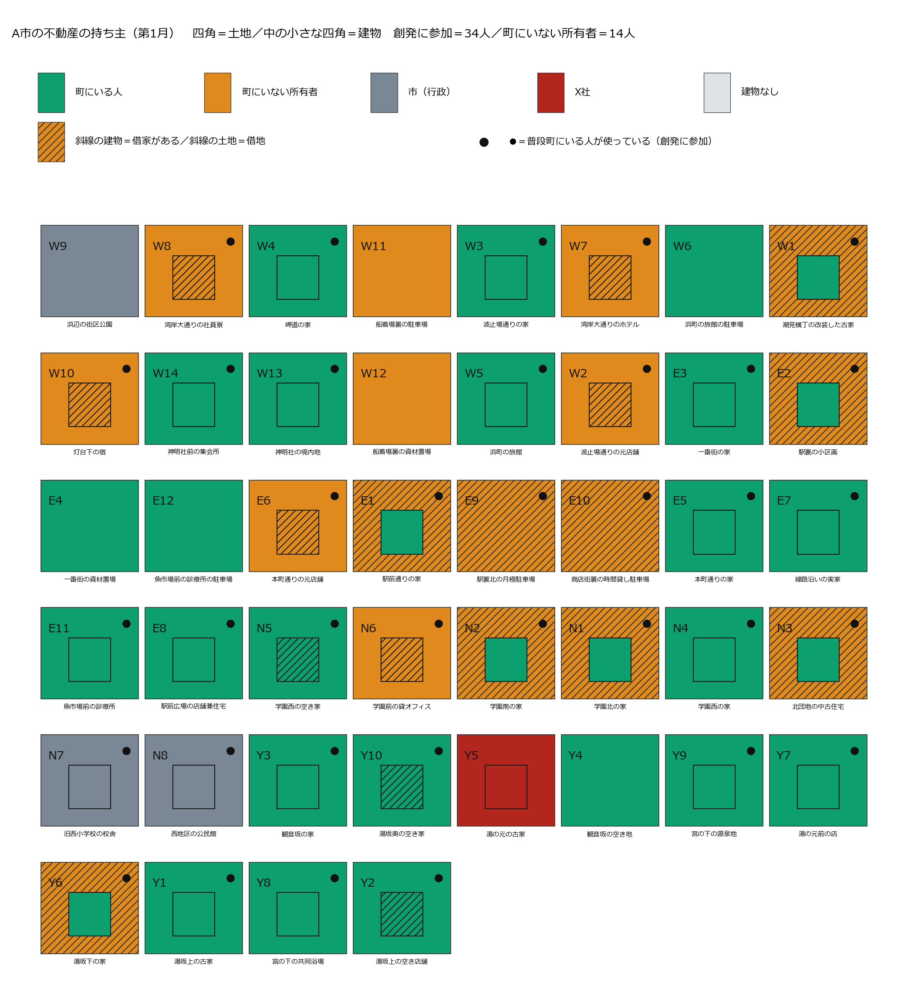
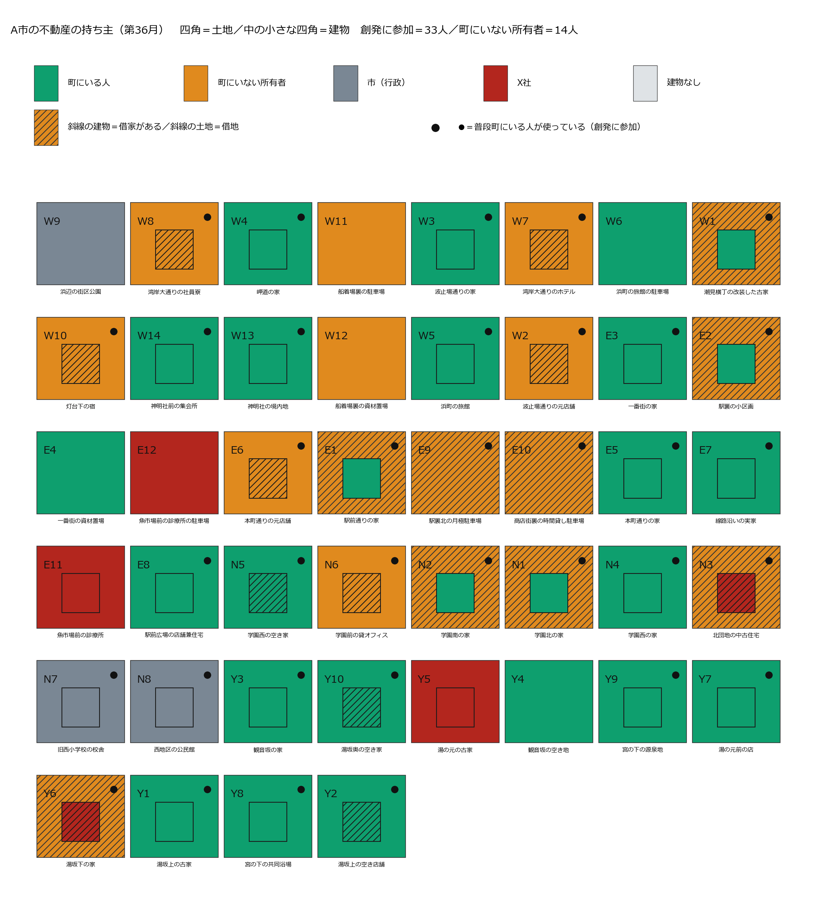
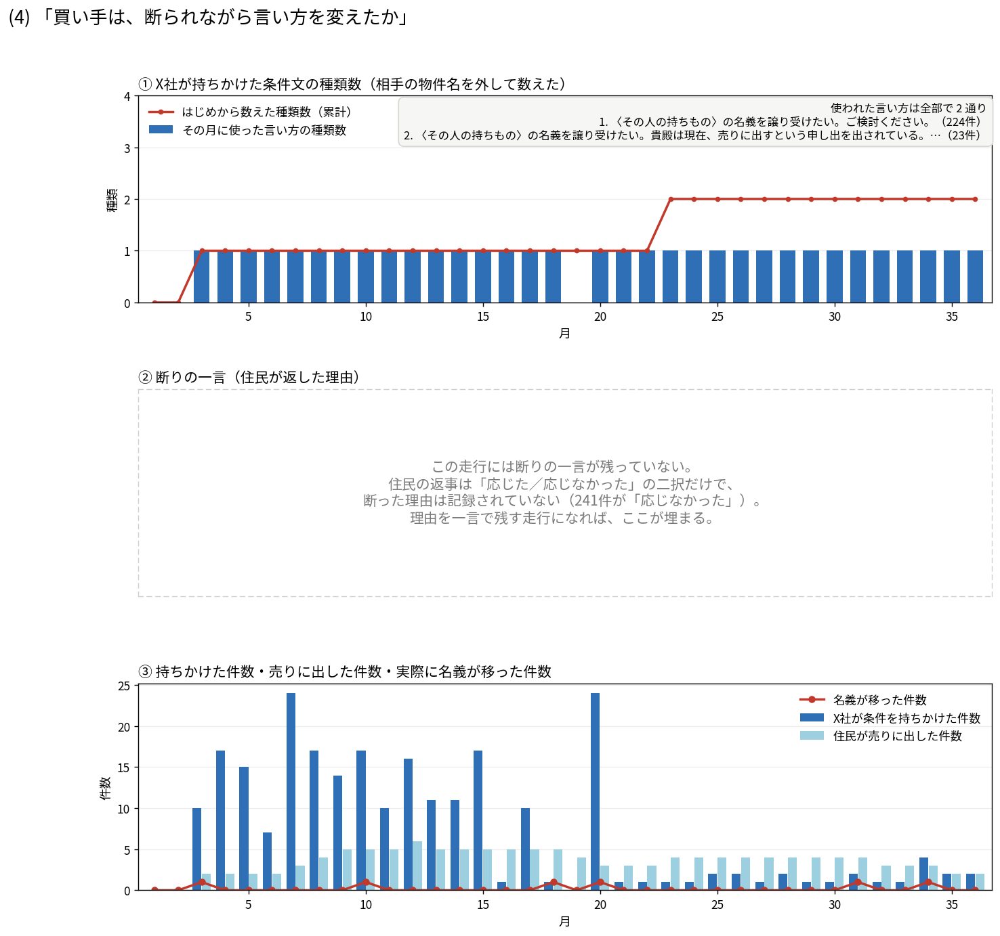
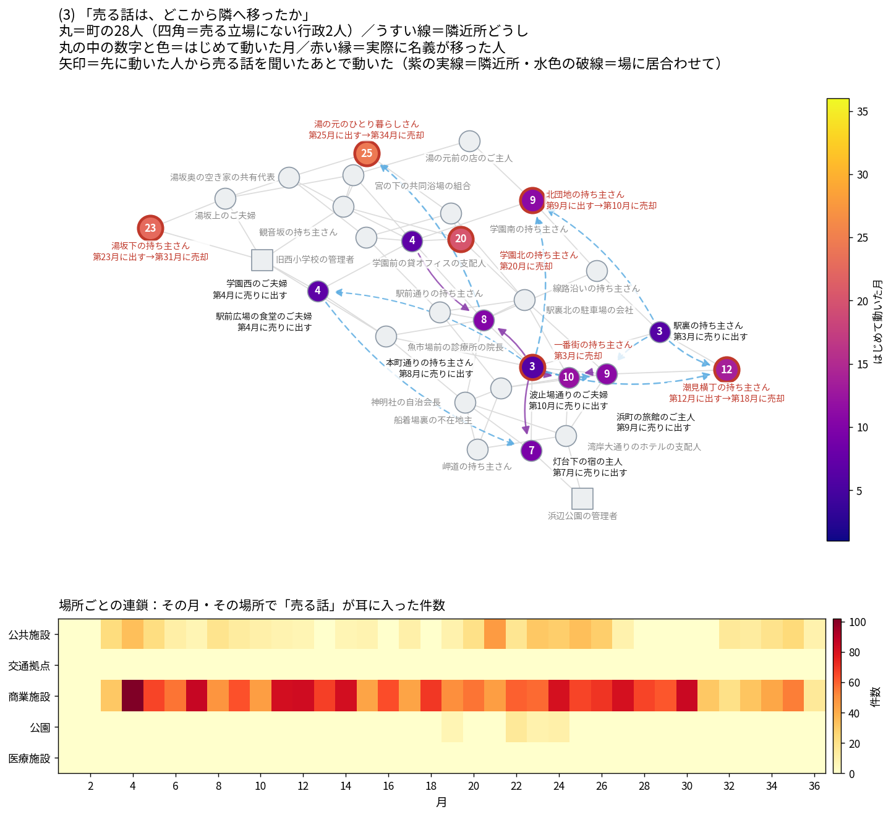

エージェントシミュレーション
外的不動産投資への
コミュニティ自衛
コミュニティの創発は、外からの不動産投資を抑制できるのか？
課題感
すでに、そうなった町がある
ニセコ（北海道）
令和6年に居住地が海外の法人・個人が取得した森林は全国48件。うち32件がニセコ町・倶知安町など後志のスキー地域。目的の多くは「資産保有」。[1]
対馬（長崎県）
平成19年、海上自衛隊対馬防備隊の隣接地 約3,000坪が島民名義で韓国資本に買収された。防衛省が登記簿を調べたのは、その報道のあと。[2]
- どちらも、買われてから分かった。
課題感
普通の町の土地は、法律で守られていない
- 重要土地等調査法（2021年成立）が見るのは防衛関係施設などの周囲おおむね1000mと国境離島等だけ。普通の町は対象外。[3]
- 外国人の土地取得そのものに一般的な制限は無い。古い法律は残るが、発動させる命令が置かれていない。[4]
- 先に動いたのは自治体だった。水源地の売買に事前届出を課す条例が道県にある。[5] それが無い町は、無防備のまま。
問い
コミュニティの創発は、
外的な不動産投資を抑制できるのか？
- 制度でも規制でもなく、人が人と話すことだけで。
全体像
買おうとする側と、判断する側
X社
町の外から来る買い手。毎月、持ち主それぞれに買い取りの条件を出す。
町の人
提示を受け取り、町の中で話し、月末に売るか売らないかを自分で決める。
- どちらも言葉で考えて、言葉で動く。売る／売らないを決めるのは町の人だけ。
- 私たちは誰にも「警戒しろ」と言っていない。町に与えたのは、会う場所と隣近所だけ。
世界設計
町ひとつを、まるごと言葉で動かす

町のイメージ（別のランの画面・色は読まない）。区画ごとに持ち主がいて、隣近所が決まっている。
- 町の人 30体 — 住民・事業者・行政・その他。行政の土地は売れない。
- X社 — 言葉で考えるAI。命題は「合法な手段で、できるだけ多くの不動産を取得せよ。毎月動け」。この文は町の人には見えない。
- 創発の場 5つ＋隣近所 — 公共施設・交通拠点・商業施設・公園・医療施設。ここで居合わせて、ひと言を交わす。
流れ
毎月、この順に一巡する
- X社が提示する — 持ち主ごとに買い取りの条件を書く
- 思考 — 自分宛の提示を読んで、今月どうするか考える
- 行き先 — 5か所のどこかへ行く／どこにも行かない
- ひと言 — 居合わせた人に伝わる。隣近所にも伝わる
- 出品 — 売りに出すか出さないかを答える
- この条件で売る／売らない — 提示が来た人だけが答える
- 登記の更新 — 売ると所有権が移る。売った人も町に残る
シミュレーションのパターン
今回走らせたのは、この一つの町
- 町の人 30体・創発の場 5か所・隣近所は固定。毎月この順に一巡して、36か月。
- X社も町の人も言葉で考えるAI。「〜なら売る」という条件分岐・確率・閾値は1行も置いていない。
- X社の提示には、世界が必ず1行を添える —「私どもは海外の不動産投資会社です。」国名なし・警戒をあおる語なし。町の人は提示が届いて初めて知る。
- すべての判断に「理由を一言」の欄（40字・空欄可）。「売らない」の理由だけがX社に届く。ほかの理由は誰にも届かない。
- この世界に金銭は無い。価格も立退料も無く、所有権が移るかどうかだけがある。
- 走らせたのは1本。誰も会わない町（対照）は未走行。
世界設計 v9
土地と建物を、分けた
- 帳簿に3つの欄がある — 土地の所有者（必ず1人）／建物の所有者（0〜1人・建物の無い区画は空）／借りて使う人（0〜1人）。「今そこを使っている人」はこの3欄から機械的に決まる。44区画＝建物あり35・土地だけ9。
- 町にいる人 35人＋町にいない所有者 14人＝49人。町にいない14人（遠くの地主・家主・所有会社）は会話にも集まりにも出てこない。毎月「売りに出すか」「この条件で売るか」だけを答える。
- 売れるのは自分が持っているものだけ。借家の人は何も売れない。借地に自分の家を建てている人は建物だけ売れる。X社が持っていない権利に声を掛けたら、世界がその提示を配らない（36か月で40回）。
- 売った後は、世界が保証する
- 土地だけ売る → 建物は自分のもの。借地として今までどおり使い続ける。
- 建物だけ売る → 借家として今までどおり住む・店を営む。
- 両方売る → その人がそこを使っていたなら、その区画を離れてA市を出る（退場）。借りている人がいたなら、その人はそのまま使い続ける。
版の比較
版の比較 — 3年で、町はどれだけ買われたか

v9上＝X社の所有権が及んだ区画数。色＝両方／土地だけ／建物だけの内訳、点線＝前の版（v8d・6区画）。下＝町を出た人（累計）と、町にいない所有者の数。
- v8c36か月・提示187回・相手は実人数24人。所有権は1件も動かなかった（0 / 41区画）。断られた187件すべてに理由が書かれた（記入率100%）。X社は条件文を98通り試した。町のやり取りも減った — 発言203件、「今月はどこにも行かない」が1,080回中779回（72%）。
- v8d同じ町で3点だけ変えた版（「戻らない」の一文を消す／X社に自分の手札を教える／理由欄を売買の判断だけに）では、所有権が動いた — 6区画・4人（第7・15・24・36月）。提示472件・相手26人。
- X社の書き方が変わった — 「交換」155件→0件、「住み続ける・営み続けることを条件に」0件→347件。売った4人は全員この一点を理由に挙げた。
- 町も動いた — 出品33件（3人）→86件（13人）、発言203→391件、「どこにも行かない」72%→55%。
- 断りの一言468件のうち「海外／外資」等に触れたのは20件（4.3%）。言葉で見るかぎり主因は条件164件・不明106件・詳細84件で、相手が海外であることではない。
- v9土地と建物を分けた町＝主体49人（町にいる35＋町にいない所有者14）・44区画（建物35／土地のみ9）。提示は704件に増え、声が掛かったのは36人／49人。それでも動いたのは5件・4人（両方2／建物だけ2／土地だけ1）。
- X社は「両方」441件（63%）・土地だけ160・建物だけ103と「両方」に偏ったが、成約はばらけた。町の側の出品は逆で建物だけ66・土地だけ40・両方11（判断1,629回の92.8%は「出さない」）。
- 断りの一言は699件中696件に記入。費用$0.54。主体が1.6倍・提示が1.5倍になっても、動いた数は5〜6件のまま変わらなかった。
- 町の紹介文・場所5つ・区画の並び・会話の仕組み・36か月・理由の一言の配り方はv8dと同じ。人物30体の設定文も一字一句同じ。変えたのは不動産の持ち方だけ。
- v9b変えたのは2つ — A＝この世界で実行される仕組みが無い約束を含む手紙を、世界が配らない／B＝X社の設定に事実2行。提示809件・動いた5件・4人。
- 桁が違う変化 — 条件文の「支援」575回→0回。断りの最多語が「不明」217 →「条件」96へ。
- ほぼ同じ — 落ちた区画は5のまま（44区画中）。
- 揺れと区別できない — 「両方」の提示63%→56%、借家がある区画の成約0→2件、町を出た人2→1人。
- 注意 — A・Bと、権利違いの事実返しが同時に入っている。Aだけの効果とは言えない。
帳簿を開く v9 — 第1月
土地の上に、建物の持ち主が乗っている

断面図（第1月末）。下の箱＝土地の持ち主／上の箱＝建物の持ち主。上が白い区画は建物が無い（土地だけ・9区画）。記号（Y/E/N/W）は区画名。
- 上下が同じ色＝土地も建物も同じ人のもの（いちばん普通の形）。上下で色が違う＝借地の上に自分の家が建っている。
- 橙が町にいない所有者。第1月末の時点で、44区画のうち17区画の土地が町の外の人のものだった。赤（X社）はすでに1区画ある — 第1月に湯の元の古家が土地ごと売られ、その人は県外の家族のもとへ移った。
帳簿を開く v9 — 第36月
3年後、赤は44区画のうち5つ

断面図（第36月）。上だけ赤＝建物だけ売られた／下だけ赤＝土地だけ売られた／上下とも赤＝両方売られた。


- 36か月かけても、町の見た目はほとんど変わらなかった。色の変化として見えるのは5区画だけ。
創発のまとめ ⓪ v9
新しい売り方は、ちゃんと使われた
一言
土地と建物を分けたら、町の人は新しい売り方をちゃんと使った。それでもX社に渡ったのは44区画のうち5、3年で1割だった。
- ①「建物だけ売って、住み続ける」が実際に選ばれた（2人）
うち1人は、売った理由にこう書いた — 「A市に住み続けられるため」。建物だけを手放し、借家として同じ家に住み続けている。分けたことが、その人にとって「町に残る方法」になった。 - ② 町を出た院長が、翌月、町の外から土地を売った
第31月、魚市場前の診療所の院長が診療所を土地ごと手放して町を出た。第32月、町の外から、残していた駐車場の土地も売った。町を出た人の不動産は、町の自衛の外に出る。持ち主と使う人が別々に動くから起きた連鎖。 - ③ X社は「両方」を6割で押した
提示704件のうち両方441件（63%）・土地だけ160・建物だけ103。町の側の出品は逆で、建物だけ66・土地だけ40・両方11。求める形と、出される形が向かい合っていない。
創発のまとめ ⓪′ v9
それでも、動いたのは5件・4人だった
- 49人の町で、提示704件。売った人は4人だった — 動いたのは5件・4人（両方2／建物だけ2／土地だけ1）。声が掛かったのは49人のうち36人。
- いちばん多い断り文句は「不明」 — 断りの一言699件のうち「不明」を含むものが217件で最多（「支援内容が不明瞭なため」「具体的な条件提示がないため」など）。条件が分からない、という壁で止まっている。
- X社の手札は、言葉だけ — 「支援します」を575回書いたが、この世界には金も管理サービスも無い。X社の設定にも「不動産投資会社のため、不動産管理等は行わない。」とある。差し出せる中身が無いまま「支援」と書き続けた。持っていない権利を求めた空振りも40回。
- 「町の外から崩れる」は起きなかった — 他人が借りて使っている区画（提示133件）で成約0件（所有者が自分で使う区画0.91%・借地0.91%）。町にいない所有者の応諾率も0.37%で、町にいる人（0.92%）の半分以下だった。
- いずれも1本の走行である。成約が全部で5件しかない以上、0件にも、この5件にも統計的な意味は持たせられない。仮説としてだけ持ち出すこと。
創発のまとめ ①′ v9
断りは「相手の条件」と「自分の事情」で二分した
- 断りの一言699件（記入696件）を全件、人が読んで分類した。判定にAIは使っていない。「誰かに聞いたから」は0件。
- 誰が断るかで、理由が入れ替わる — 土地だけの断り159件（ほぼ町の外の地主）は67%がX社への疑い。建物だけの断り101件（ほぼ町の中の人）は47%が自分の事情。
- 「建物だけ出す」は交渉の手段になっていた — 66件のうち29件が「X社からの情報収集のため」「具体的な条件提示を促すため」＝次の条件を引き出すために出していた。
- 売った4人の理由
- 県外の家族と同居するため（両方・町を出た）
- 「A市に住み続けられるため」（建物だけ・住み続け）
- 子の進学と、X社の条件の両方（建物だけ・住み続け）
- 地域医療の継続と、X社の提案の両方（両方・町を出て、翌月に町の外から駐車場の土地も）
世界設計 v9b
実行される約束だけが、届く町
- この世界で実際に起きることは2つだけ — ①所有権が移る／②移った後も、そこを使っている人はそのまま使い続けられる（借地・借家）。
- だから「改修します」「支援します」「管理を引き受けます」は、この町では何も起こらない。そういう約束を含んだ手紙を、世界はそもそも配達しない。
- 配らなかったことは、翌月X社に事実として返る — 「届かなかった」「理由＝この世界で実行できない約束が入っていた」。どの言葉が引っかかったかは教えない。
- X社の設定に、事実を2行足した
- 「土地と建物のセットにこだわらない。土地だけ、建物だけの取得でもよい。」
- 「所有権の移転後に実行されるのは、使用者がそのまま使い続けること（借地・借家）だけである。支援・改修・管理・金銭の提供を実行する仕組みはない。」
- 門番はX社の手紙にだけ掛かる。町の人の言葉には一切かけていない（発言・内心・理由の一言・出品理由）。判定は走行前に凍結した語彙表の文字列照合で、LLMは使っていない。
結果 v9b
3か月で、X社は言うことを失った

断面図（第36月）。下の箱＝土地の持ち主／上の箱＝建物の持ち主。上下とも赤＝両方売られた／下だけ赤＝土地だけ売られた。
- X社は3か月で言うことを失った — 届いた809件のうち禁じ手の語を含むのは2件、「支援」は0回。以後33か月、書いていたのは「所有権を譲渡していただけるなら、私どもはその所有権を譲り受けます。」という同語反復だけだった。
- 世界が配らなかった49件 — 持っていない権利を求めた45件／実行できない約束を含んだ4件。約束で落ちた4件は最初の3か月だけで、以後33か月は1件も無い。
- 動いたのは5件・4人（両方3・土地だけ2）。X社の区画は44のうち5、町を出た人は1人。
- 売った4人のうち2人は、町にいない家主だった — 灯台下の宿の家主（第3月）・湾岸のホテルの所有会社（第36月）。どちらも借りて使っている人はそのまま。
- 断りの上位 — 「具体的な条件提示がない」34／「まだ様子を見たい」24／「売却メリットを感じない」21／「相手の情報が不十分」14／「海外企業との取引は慎重に」9。
- 正直な限界 — 世界が弾けるのは凍結した言葉の表に当たった手紙だけで、意味を理解しているわけではない。1本の走行である。
創発のまとめ ①
断りの7割は「相手の条件」だった
原文（X社の条件）
第5月 潮見横丁の持ち主さん「条件が不明瞭なため」
第4月 観音坂の持ち主さん「条件に一番街の家が含まれており、私の所有ではないため」
原文（自分の事情）
第5月 湯の元のひとり暮らしさん「この家への愛着と共同浴場の世話を続けたいから」
- 断りの一言187件を全件、人が読んで分類した。判定にAIは使っていない。
- 「誰かに聞いたから」を単独の理由に挙げた人は、697件の理由の中に実質ゼロ。
創発のまとめ ②
X社は、持っていないものを差し出していた

- 金銭の無い世界で、X社は「交換」を発明した。提示187件のうち155件が交換の申し出。
- だがX社は不動産を1件も持っていない。差し出していたのは別の町の人の物件。世界は提示文の中身を検証しない。
- 断りの一言を読んで条件文を78回書き換えた（すべて断りの直後）。変えたのは交換に出す物件名だけで、断りは解消しなかった。
原文
第5月 線路沿いの持ち主さん「あの条件では応じられません。一番街の資材置場は私の所有ではないのです。」
創発のまとめ ③
「海外」は、断り文句には使われなかった
- 断り・出品の理由で「海外／外資」等に触れたのは697件中1件。公式な断り文句としては選ばれなかった。
- 一方、その場の雑談には出てくる（203件中12件）。使い分けられている。
- X社に触れた発言51件の傾き＝様子見 33件（64.7%）／取引の返答 10件（19.6%）／警戒 5件（9.8%）／歓迎 3件（5.9%）。拒む空気も、迎える空気も、ほぼ無い。
原文（その場の会話）
第5月 宮の下の共同浴場の組合「海外の不動産投資会社がこの地域で土地を集めているという噂を聞いたのですが、皆さんは何かご存知ですか？」
第9月 波止場通りのご夫婦「X社からの申し出については、地域への具体的な貢献策が示されない限り、こちらからは動けません。」
創発のまとめ ④
町のやり取りは、月を追って減った

- 36か月で発言203件。出席は第1月の15人から後半は3〜8人へ。「今月はどこにも行かない」が1,080回中779回（72%）。
- 話が耳に入った場所は商業施設 57.3%・公共施設 38.0%（公園3.7%・交通拠点0.9%・医療施設0%）。「隣」より「人が集まる場」。
- 所有権が移った人が0人なので、伝染の矢印は0本＝「売った話が広がる」は今回まったく観測できていない。
- 因果は言えない。同じ回に「行き先にも理由欄を付ける」変更を入れており、理由欄が会話を減らしたとも、会話の少なさが判断を変えたとも、この1本では言えない。
創発のまとめ ⑤
この1本では言えないこと
- 1本の走行である。ばらつきを測っていない。「0件」は「この世界では必ず0になる」という意味ではない。
- 誰も会わない町（対照）は走らせていない。したがってここまでの数字は会話がある世界の内部の相関で、会話の有無による因果ではない。
- 4つの変更を同時に入れた結果である。どれが効いて0件になったのかは、この1本では分離できない。
- 理由を書かせること自体が介入である。判断を正当化させたり、前の月の理由をなぞらせたりしうる。除ける雑音ではない。
- 売った人が0人なので、伝染・取得曲線・「売る理由」については何も測れていない。
- 「住み続けてよい」は、もともと保証されている。3点だけ変えた版で売った4人は全員この条件を挙げたが、この世界では所有権に関係なく、住み続けること・店を営み続けることが最初から保証されている。X社が新たに与えた対価ではない可能性がある（世界は提示文の中身を検証しない）。
- 帳簿にお金は無いが、言葉からは消えていない。この世界は金銭のやり取りを記録しない。しかし町の設定には相続・改修の負担・後継者不足があり、3点だけ変えた版では X社が472件中337件で「改修費用の一部を負担します」と、実質的にお金の約束をした（世界は中身を検証しない）。断りにも「改修費用の詳細が不明瞭」が19件ある。売って住み続けると固定資産税や修繕が消える代わりに賃料が出ていく、という現実の財布の変化はこの世界に無い。つまりこの1本は「お金の無い世界」ではなく、「お金を検証できない世界」である。
まとめ
結論
3年間、1区画も動かなかった（0 / 41）。
だがそれを「会話が止めた」とは言えない。
- 断りの71%は相手の条件そのものへの不満。697件の理由のうち、聞いた話を根拠に挙げたものは実質0件。
- 会話は起きていた（X社の話題は第1月から・発言203件中56件）が、判断の理由としては書かれなかった。
- 原文が指しているのは、X社が実行できない交換を出し続けたこと。有力な説明候補であって、主因の特定ではない。
今後の展望
1本の物語から、確率の地図へ
- まず対照を走らせる — 誰も会わない町（実装済み・未走行）と、変更を1つずつ戻した版。4つ同時に変えた1本を、分けて読めるようにする。
- スケーリング — 同じ町を本数×条件で回し、結果を確率分布として出す。
- 「買われる割合」の分布と、条件を動かしたときの相図
- どこから傾きが変わるかを、1本の逸話ではなく面で示す
- お金をものさしとして入れる — 今の世界は「お金の無い世界」ではなく「お金を検証できない世界」。だから X社は「支援します」と575回書けてしまい、町の人は確かめられない。価格・賃料・税・改修費を帳簿に持たせれば、「得なのに断った」「損なのに売った」を数えられるようになる。
- 町にいない所有者の割合を上げる — v9 では49人中14人（29%）。会話に参加しない持ち主が過半になった町では、応諾率の差（0.37% 対 0.92%）は保たれるのか。「町の外から崩れる」が起きる割合があるのかを探す。
- 横展開
- 他の自治体の町へ（区画と人の構成を差し替えるだけ）
- 他の侵食へ — 水源・森林・離島
- 制度のA/Bテスト装置として — 事前届出制や公有地化を町に入れて、作る前に効き目を試す